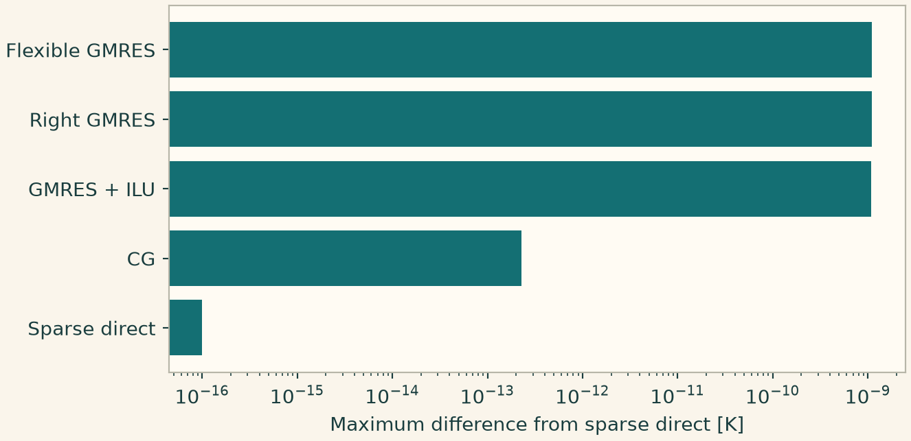

Docs › Worked numerical comparisons › Linear algebra lab
9.5 Linear algebra lab
9.5.1 Linear solvers against a common direct reference
Keep the physical conduction problem and FE space fixed. Measure the maximum difference from sparse direct solution and inspect the solver report for the executed provider. CG needs a suitable symmetric operator. Right and flexible GMRES own different preconditioning contracts.
import numpy as np
import matplotlib.pyplot as plt
import onesimulation_plot_theme as theme
from onesim.cad.d3 import Box
from onesim.materials import IsotropicSolid
from onesim.meshing import StructuredHexahedralMesher
from onesim.numerics import Numerics
from onesim.numerics.fem import FiniteElement, Lagrange
from onesim.numerics.linear import (
SparseDirect,
ConjugateGradient,
GMRES,
RightGMRES,
FlexibleGMRES,
ILU,
)
from onesim.physics.heat_transfer import FixedTemperature, HeatConduction
from onesim.simulation import Problem, Simulation
box = Box(length=1, width=1, height=1)
material = IsotropicSolid(
density=1,
specific_heat_capacity=1,
thermal_conductivity=1,
youngs_modulus=100,
poisson_ratio=0.3,
thermal_expansion_coefficient=0,
)
model = HeatConduction(domain=box.volume, material=material, heating=1.0)
problem = Problem(
name="Heated box",
geometry=box,
physics=(model,),
boundary_conditions=(
FixedTemperature(physics=model, boundary=box.boundaries.all, value=300.0),
),
)
mesh = StructuredHexahedralMesher(cells=(5, 5, 5)).generate(box)
space = FiniteElement(element=Lagrange(1))
options = dict(
relative_tolerance=1e-11, absolute_tolerance=1e-12, maximum_iterations=500
)
solvers = {
"Sparse direct": SparseDirect(),
"CG": ConjugateGradient(**options),
"GMRES + ILU": GMRES(preconditioner=ILU(), **options),
"Right GMRES": RightGMRES(preconditioner=ILU(), **options),
"Flexible GMRES": FlexibleGMRES(preconditioner=ILU(), **options),
}
solutions = {}
for label, solver in solvers.items():
sim = Simulation(
problem=problem,
mesh=mesh,
numerics=Numerics(spatial=space, linear_solver=solver),
)
result = sim.solve_stationary()
solutions[label] = np.asarray(result.field(model.temperature).values)
print(label, result.result_set.solver_report)
reference = solutions["Sparse direct"]
errors = [np.max(np.abs(y - reference)) for y in solutions.values()]
assert max(errors) < 2e-8
theme.use_theme()
fig, ax = plt.subplots(figsize=(6.8, 3.3), layout="constrained")
ax.barh(list(solvers), np.maximum(errors, 1e-16))
ax.set(xscale="log", xlabel="Maximum difference from sparse direct [K]")
plt.show()
